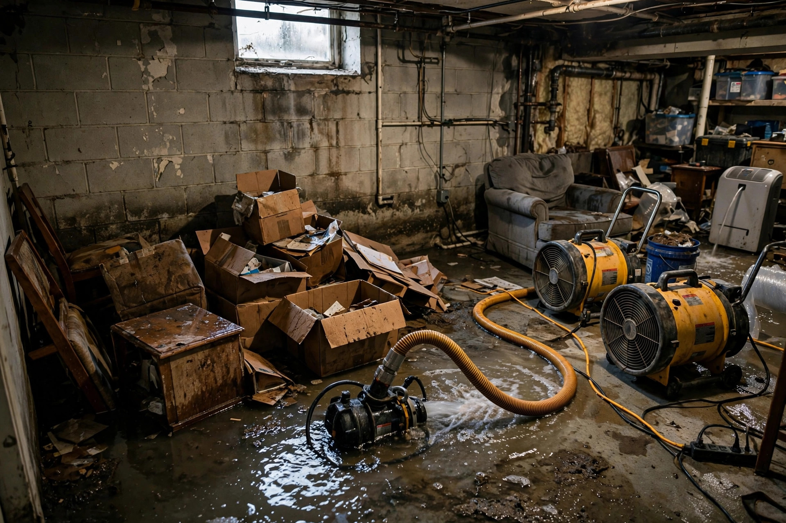

Flooded Basement Cleanup in Eagle, ID
A flooded basement is overwhelming — water everywhere, belongings floating, that sinking feeling. Take a breath. This is fixable, and it starts with getting the water out and the space dry before secondary damage takes hold.

How Eagle basements flood
Understanding the source matters — it determines both the cleanup approach and what prevents the next one.
Sump pump failure
The most common cause in Eagle's lower-lying areas. Pumps die from age, get overwhelmed during rapid snowmelt, or stop when the power goes out. A battery backup is cheap insurance most homes don't have — until the first flood.
Foundation seepage
Water doesn't need a crack to get in. Hydrostatic pressure pushes groundwater through porous concrete, especially near the Boise River where the water table runs high. It starts as damp spots and becomes standing water during wet periods.
Plumbing failures
Water heaters, washing machines, and supply lines all live in or above basements. A burst hose or failed tank dumps dozens of gallons in minutes — clean water, but just as destructive to finishes and belongings.
Surface water intrusion
Poor grading, clogged gutters, or downspouts dumping next to the foundation send rainwater straight down the wall. Eagle's newer subdivisions usually grade well — until landscaping changes redirect the flow.
From standing water to dry and clean
Water removal
Submersible pumps handle deep water; truck-mounted extractors follow for the remainder. We get the space from flooded to damp as fast as physically possible — that's the single biggest factor in limiting damage.
Content handling
Belongings get sorted: save, clean, discard. Hard goods usually survive. Upholstered furniture and cardboard boxes in standing water generally don't. We document everything for your insurance claim.
Tear-out of ruined materials
Wet drywall, insulation, and carpet pad come out — they can't be dried reliably once saturated. We cut along clean lines so the rebuild is straightforward.
Drying and sanitizing
Air movers, dehumidifiers, and antimicrobial treatment bring the space back to dry standards. Concrete gets special attention — it holds moisture far longer than it appears to.
Spring runoff overwhelms an aging sump pump in an Eagle home near the river. The homeowner discovers two inches of water in the finished basement on a Monday morning. The pump gets replaced, water gets extracted the same day, wet carpet pad and the bottom foot of drywall come out, and drying equipment runs for four days. The alternative — waiting until the weekend — would have meant mold throughout the wall cavities.
Preventing the next flood
Cleanup solves today. These steps protect tomorrow.
- Install a battery-backup sump pump — power outages and floods arrive together.
- Extend downspouts at least six feet from the foundation.
- Check grading every spring; soil settles and creates low spots against walls.
- Know where your main water shutoff is before you need it.
Straight answers
Is basement flood water dangerous?
It depends on the source. Supply-line water is clean. Groundwater seepage is gray water — not sewage, but not clean. If there's any chance of sewage backup mixed in, treat it as hazardous and don't wade in without protection. When in doubt, call (321) 985-3339 and ask.
How long does basement flood cleanup take?
Extraction: hours. Drying: three to five days typically. Full job including tear-out and sanitizing: about a week. Rebuild is separate and depends on the finish level — a basic basement is faster than a home theater.
Can my flooded carpet be saved?
Wall-to-wall carpet usually can't — the pad underneath acts like a sponge and won't dry clean. Area rugs often can be professionally cleaned. Hardwood and tile have better odds if drying starts quickly.
What should I do with wet belongings?
Move them to a dry area with airflow. Hard goods: wipe down. Fabrics: wash hot. Paper and photos: freeze them (yes, really — it stops mold until you can deal with them properly). Document everything before discarding for insurance.
Why did my sump pump fail?
Common reasons: age (they last 7-10 years), a stuck float switch, an overwhelmed pump during heavy inflow, or power loss. We see all four regularly in Eagle. A new primary pump plus battery backup solves three of them.
Basement underwater?
Take a breath, then call. We'll walk you through the first steps and get a crew moving.